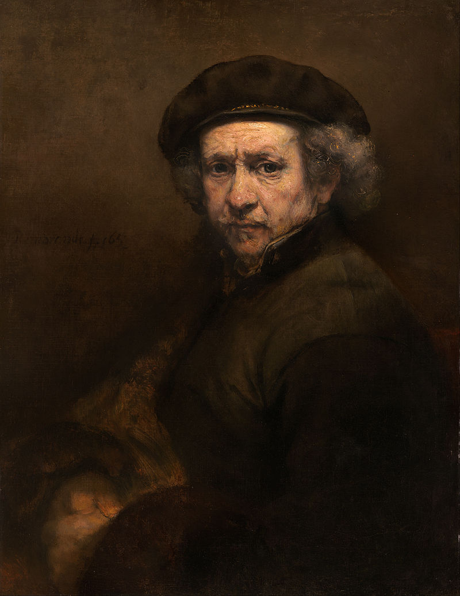
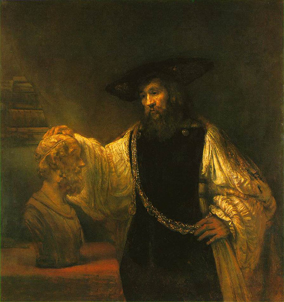

Aristòtil contemplant el bust d'Homer
Galeria
Formulari
Creador
Inici
Descripció
Aristòtil contemplant el bust d'Homer L'obra està signada i datada: REMBRANDT F. 1653. Rembrandt representa Aristòtil mirant reflexivament el bust d'Homer. Una càlida llum sura entre les dues figures, i es concentra precisament on haurien de creuar les mirades. És una llum que sembla brollar de dins de la foscor. Aristòtil vas veure com un ric mercader holandès del segle XVII. La cadena d'or que porta al voltant del cos apareix en altres retrats de Rembrandt i recorda als regals que rebien els pintors dels seus mecenes. Se li representa com un home gran, quan ja el seu alumne Alexandre el Gran estava dedicat a la conquesta d'un imperi. Podria estar pensant en l'ascens d'Alejandro, les seves ambicions mundanes, enfront de l'espiritualitat de l'home representada per Homer.
Autor
Rembrandt Harmenszoon van Rijn (Leiden, juliol 15 de 1606-Amsterdam 4 d'octubre de 1669) va ser un pintor i gravador neerlandès. La història de l'art li considera un dels més grans mestres barrocs de la pintura i el gravat, sent amb seguretat l'artista més important de la història dels Països Bajos.1 La seva aportació a la pintura coincideix amb el que els historiadors han donat a cridar l'edat d'or neerlandesa, el considerat moment cim de la seva cultura, ciència, comerç, poder i influència política. Havent aconseguit l'èxit en la joventut, els seus últims anys van estar marcats per la tragèdia personal i la ruïna econòmica. Els seus dibuixos i pintures van ser sempre molt populars, gaudint també de gran predicament entre els artistes i durant vint anys es va convertir en el mestre de pràcticament tots els pintors neerlandesos. Entre els majors èxits creatius de Rembrandt estan els magistrals retrats que va realitzar per als seus contemporanis, els seus autoretrats i les seves il·lustracions d'escenes bíbliques. En els seus autoretrats, especialment, s'observa sempre la mirada humil i sincera d'un artista que va traçar en ells la seva pròpia biografia. Rembrandt tenia un profund coneixement de la iconografia clàssica i en les seves pintures i gravats solia interpretar-la lliurement per ajustar-la a la seva pròpia experiència. Així, en la representació d'una escena bíblica Rembrandt solia combinar el seu propi coneixement del text amb el seu particular concepte de la composició clàssica i algunes observacions anecdòtiques de la població jueva d'Amsterdam. Per l'empatia amb què va retratar la condició humana, Rembrandt ha estat considerat «un dels grans profetes de la civilització
Retrat de Rembrandnt

Zoom obra
